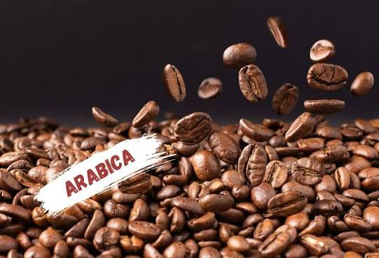
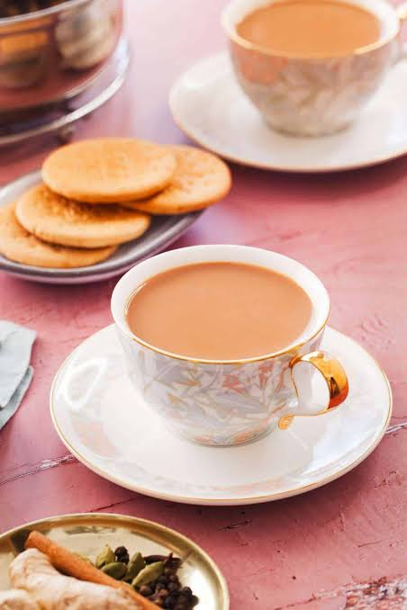

Our Coffee

Arabica Coffee
Our premium Arabica coffee is selected from high-quality growing regions and has a rich, smooth flavour with a gently sweet finish.
Kenyan House Blend
This lively blend highlights the bright fruit notes and balanced body of East African coffee, making it a refreshing cup at any time of day.
Espresso
Roasted for depth and intensity, our Espresso Roast brings bold chocolate notes and a full-bodied finish to espresso and milk-based drinks.
Our Tea

Kenyan Black Tea
Our Kenyan Black Tea offers a rich aroma, a satisfying full-bodied taste, and a refreshing finish. Enjoy it on its own or with milk.
Green Tea
Light and smooth, this carefully selected green tea has delicate grassy notes and makes a calming, refreshing brew.
Herbal Garden Infusion
A naturally caffeine-free blend of fragrant herbs and botanicals, created for a soothing cup in the afternoon or evening.